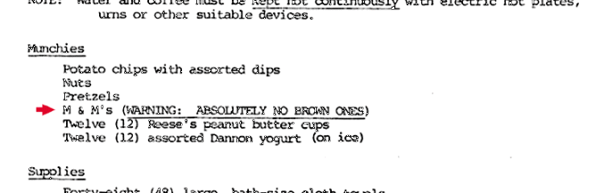

Brown M&Ms
Saturday, September 6, 2014 · 4 min read
David finally convinced me why we use MLA format. This is a story that involves Van Halen, and the existence of a clause in their contract that demanded a bowl full of M&Ms, but no brown ones. I’ve included the story from the horse’s mouth, i.e. lead singer David Lee Roth (not the same David). All this is quoted from Snopes.
Van Halen was the first band to take huge productions into tertiary, third-level markets. We’d pull up with nine eighteen-wheeler trucks, full of gear, where the standard was three trucks, max. And there were many, many technical errors — whether it was the girders couldn’t support the weight, or the flooring would sink in, or the doors weren’t big enough to move the gear through.
The contract rider read like a version of the Chinese Yellow Pages because there was so much equipment, and so many human beings to make it function. So just as a little test, in the technical aspect of the rider, it would say “Article 148: There will be fifteen amperage voltage sockets at twenty-foot spaces, evenly, providing nineteen amperes…” This kind of thing. And article number 126, in the middle of nowhere, was: “There will be no brown M&M’s in the backstage area, upon pain of forfeiture of the show, with full compensation.”
So, when I would walk backstage, if I saw a brown M&M in that bowl… well, line-check the entire production. Guaranteed you’re going to arrive at a technical error. They didn’t read the contract. Guaranteed you’d run into a problem. Sometimes it would threaten to just destroy the whole show. Something like, literally, life-threatening.
The folks in Pueblo, Colorado, at the university, took the contract rather kinda casual. They had one of these new rubberized bouncy basketball floorings in their arena. They hadn’t read the contract, and weren’t sure, really, about the weight of this production; this thing weighed like the business end of a 747.
I came backstage. I found some brown M&M’s, I went into full Shakespearean “What is this before me?” … you know, with the skull in one hand … and promptly trashed the dressing room. Dumped the buffet, kicked a hole in the door, twelve thousand dollars’ worth of fun.
The staging sank through their floor. They didn’t bother to look at the weight requirements or anything, and this sank through their new flooring and did eighty thousand dollars’ worth of damage to the arena floor. The whole thing had to be replaced. It came out in the press that I discovered brown M&M’s and did eighty-five thousand dollars’ worth of damage to the backstage area.
Well, who am I to get in the way of a good rumor?

Well, (the real) David figured that conforming to MLA’s restrictions was your way of proclaiming a lack of brown M&Ms. If you got MLA wrong, then who knows what else you’ve messed up?
To be honest, I don’t care much for MLA, because whenever I’m using it, it’s because I’m doing another one of those English assignments where I feel I’m being graded on my word count. However, since David’s lecture, I’ve seen brown M&Ms pop up everywhere in my life. Most notably, in the programming world.
There are ‘best practices’ everywhere. Almost all of them, of course, are justifiable. Don’t use GOTO because nobody will be able to follow your code. Don’t use eval because it’s a welcome mat for crackers. Don’t indent with tabs, they render differently for everyone. Anyone sharing their first Python project knows how many opinions everyone has. It’s almost discouraging, because you’re trying to implement something for fun and people are yelling at you because you didn’t cache intermediate results in a binary search tree, and so the whole thing’s too slow to be practical, and you should just give up now and spend your time one something more useful, like learning [insert language here].
Don’t listen to those people.
Learning programming, or any other human endeavor, is all about implementation. You need to run into problems before you can appreciate the solutions we have devised.
For instance, I learned optics by writing a raytracer on my own, in seventh grade (side story: I didn’t know what vectors were, and later discovered that I had invented the cross product on my own, but mirror-imaged). In the beginning, it used to take a few hours to render a 100-by-100 image. As I found various optimizations, I incorporated them, and it got faster.
Would I have learned as much if the first time I showed it to someone, they told me to go implement k-D trees before they’ll give real constructive criticism? What kept me interested was implementing shiny ideas like Phong illumination (pun intended), and then optimizing them so that I could fit more tests within my lifetime. Anyone can find plenty of things wrong with my implementation. I was storing images as a JSON array of pixel values since I didn’t grok PNG.
Everyone has their own Brown M&Ms. We’re presented so much information on a daily basis, that we need Brown M&Ms to decide what matters and what doesn’t. I will probably put off an email whose subject line is misspelled. Or close a webpage with a pop-up. Or disregard pull requests that mess up whitespace. It’s ok to have Brown M&Ms—and it’s ok for them to be as obscure as you want—but it’s not ok to foist them upon others.
The next time you see a newbie modify the Array prototype directly, please
don’t yell at them. Take a deep breath and let it go. Someday, they will run
into a namespace conflict, and that will be far more educational than your
rant. It’s a favor.